Asymmetric Total Synthesis of Glabridin
10.1021/acs.joc.6c00242 · paper-0bac8bc7088bc164
17 个当篇编号分子；13 个主网络事件与 1 个独立优化事件。所有分子使用 RDKit canonical isomeric SMILES。数据为原图转录候选，待独立化学专家审定。
完整 JSON · 逐步 CSV · 路线 JSON · 分子 SDF · 验证结果
汇聚路线
a1 → a2 → a3 → a
b1 → b2 → b3 → b4 → b
a + b → 2 → 3 → 4 → [5] → 6 → [7] → 8 → 9 (Glabridin)
方括号结构为主制备中未分离的源绘图中间体。6 的 C9 构型未指定。完整路线的分子序列是拓扑排序清单；双反应物连接由 reaction hyperedges 与 start_labels 表达。
反应事件
分子及 canonical isomeric SMILES
a1 · Resorcinol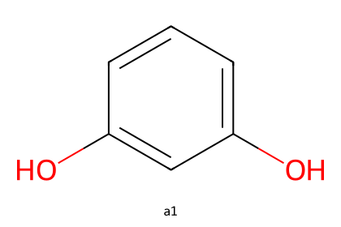
C6H6O2 · achiral
Oc1cccc(O)c1a2 · 1,3-Bis((tetrahydro-2H-pyran-2-yl)oxy)benzene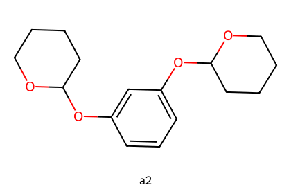
C16H22O4 · THP_acetal_centers_unassigned
c1cc(OC2CCCCO2)cc(OC2CCCCO2)c1a3 · 2,2'-((2-(3-Methylbut-2-en-1-yl)-1,3-phenylene)bis(oxy))bis(tetrahydro-2H-pyran)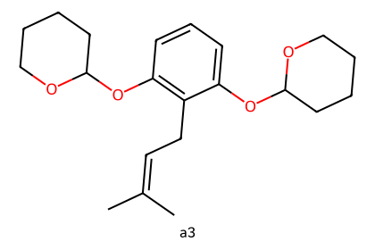
C21H30O4 · THP_acetal_centers_unassigned
CC(C)=CCc1c(OC2CCCCO2)cccc1OC1CCCCO1a · 2-(3-Methylbut-2-en-1-yl)benzene-1,3-diol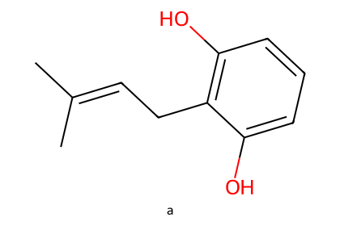
C11H14O2 · achiral
CC(C)=CCc1c(O)cccc1Ob1 · 1,3-Dimethoxybenzene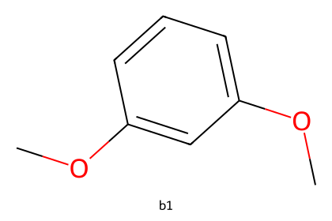
C8H10O2 · achiral
COc1cccc(OC)c1b2 · 1-Iodo-2,4-dimethoxybenzene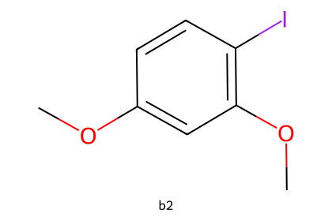
C8H9IO2 · achiral
COc1ccc(I)c(OC)c1b3 · Diethyl 2-(2,4-dimethoxyphenyl)malonate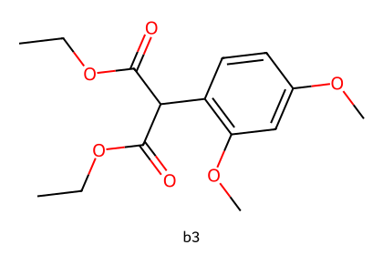
C15H20O6 · achiral
CCOC(=O)C(C(=O)OCC)c1ccc(OC)cc1OCb4 · 2-(2,4-Dimethoxyphenyl)propane-1,3-diol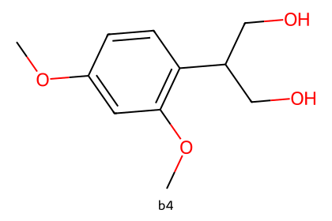
C11H16O4 · achiral
COc1ccc(C(CO)CO)c(OC)c1b · (R)-2-(2,4-Dimethoxyphenyl)-3-hydroxypropyl acetate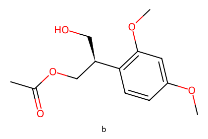
C13H18O5 · source_absolute_configuration_transcribed
COc1ccc([C@H](CO)COC(C)=O)c(OC)c12 · (R)-2-(2,4-Dimethoxyphenyl)-3-(3-hydroxy-2-(3-methylbut-2-en-1-yl)phenoxy)propyl acetate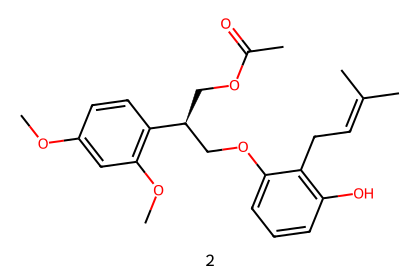
C24H30O6 · source_absolute_configuration_transcribed
COc1ccc([C@@H](COC(C)=O)COc2cccc(O)c2CC=C(C)C)c(OC)c13 · (S)-3-(2-(2,4-Dimethoxyphenyl)-3-hydroxypropoxy)-2-(3-methylbut-2-en-1-yl)phenol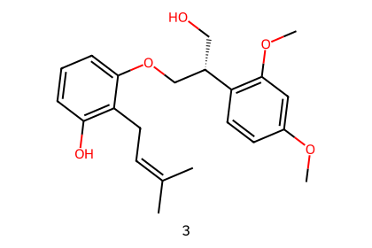
C22H28O5 · source_absolute_configuration_transcribed
COc1ccc([C@@H](CO)COc2cccc(O)c2CC=C(C)C)c(OC)c14 · (R)-3-(2-(2,4-Dimethoxyphenyl)-3-iodopropoxy)-2-(3-methylbut-2-en-1-yl)phenol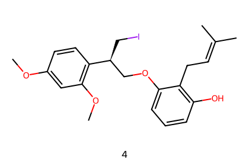
C22H27IO4 · source_absolute_configuration_transcribed
COc1ccc([C@@H](CI)COc2cccc(O)c2CC=C(C)C)c(OC)c15 · Source intermediate 5 (bracketed in Scheme 5)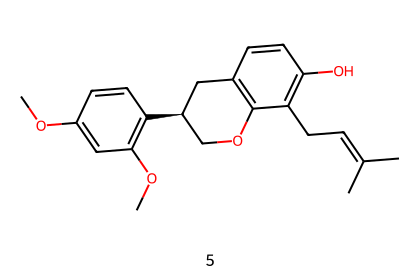
C22H26O4 · source_absolute_configuration_transcribed
COc1ccc([C@@H]2COc3c(ccc(O)c3CC=C(C)C)C2)c(OC)c16 · (3R)-3-(2,4-Dimethoxyphenyl)-8,8-dimethyl-3,4,9,10-tetrahydro-2H,8H-pyrano[2,3-f]chromen-9-ol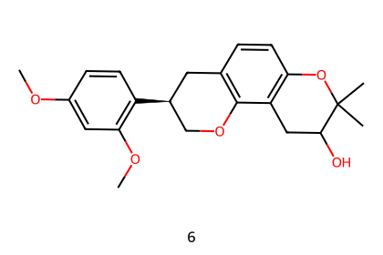
C22H26O5 · diastereomeric_mixture_C9_unassigned
COc1ccc([C@@H]2COc3c(ccc4c3CC(O)C(C)(C)O4)C2)c(OC)c17 · Source intermediate 7 (bracketed chloride in Scheme 5)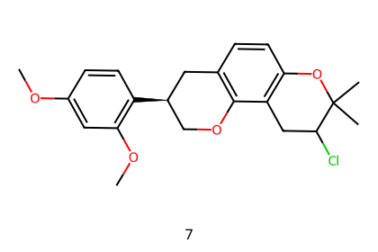
C22H25ClO4 · C9_unassigned_source_bracket_intermediate
COc1ccc([C@@H]2COc3c(ccc4c3CC(Cl)C(C)(C)O4)C2)c(OC)c18 · (R)-3-(2,4-Dimethoxyphenyl)-8,8-dimethyl-3,4-dihydro-2H,8H-pyrano[2,3-f]chromene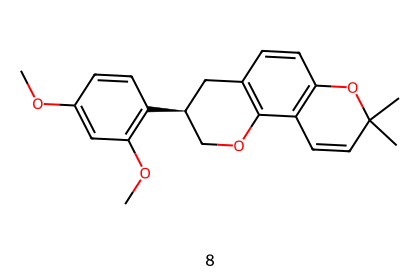
C22H24O4 · source_absolute_configuration_transcribed
COc1ccc([C@@H]2COc3c(ccc4c3C=CC(C)(C)O4)C2)c(OC)c19 · (R)-Glabridin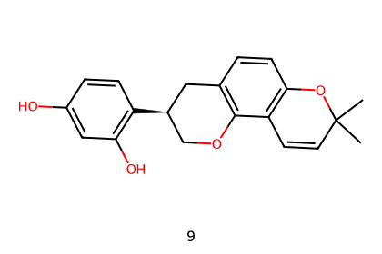
C20H20O4 · source_absolute_configuration_transcribed
CC1(C)C=Cc2c(ccc3c2OC[C@@H](c2ccc(O)cc2O)C3)O1 来源冲突与边界
- I01: Previous syntheses in Scheme 1 and retrosynthetic labels 1/1-prime in Scheme 2 are excluded. Scheme 6 mechanistic protonated/epoxide states are not counted as experimentally observed steps.
- I02: THP acetal configurations are unspecified. Compound 6 is an inseparable diastereomeric mixture (article p7; SI S11); C9 is left unassigned. Bracketed 7 also has unspecified C9 configuration.
- I03: Abstract (p1) claims 99.9% ee; conclusion (p5) and experimental section (p7) report 99% ee. SI S15 shows a single integrated peak at 100.00 area percent, which is not independently converted into a precise ee.
- I04: The preparation of b states b4 5.04 g/2.4 mmol and vinyl acetate 3.5 g/3.6 mmol; reported masses and mmol values are inconsistent. Retain reported 78% yield without deriving corrected quantities.
- I05: The preparation of 8 states compound 6 71 mg/0.8 mmol, inconsistent with C22H26O5; the product is 56 mg and reported 83%. No mmol correction is silently made.
- I06: PPTS is reported as 3.65 g, 1.45 mmol, 0.04 equiv (article p5); these values are internally inconsistent.
- I07: Schemes abbreviate conditions: E02 omits additional 15 h at room temperature; E10 omits 3 h room-temperature phase; final HCl hydrolysis is marked rt in Scheme 5 but 0-10 C experimentally. Structured steps use the detailed experimental section.
- I08: 57% is combined 4-to-6 yield and 83% is combined 6-to-8 yield. No yield is copied onto internal steps. Table 1 86% for 4-to-5 belongs to a separate selected optimization trial.
- I09: The paper calls the enzymatic step kinetic resolution. Drawn b4 is prochiral with equivalent CH2OH groups; normalized transformation is enantioselective monoacetylation/desymmetrization. This is a curator interpretation of terminology, not new experimental evidence.
- I10: The file filed as SI-002 is a byte-distinct, text-identical duplicate of the 9-page main article; deduplicated using page text digest.
- I11: Model-assisted source transcription, RDKit canonicalization, formula/CIP checks and export validation are not independent expert admission. No atom mapping, atom balance or ORD submission certification is asserted.
- I12: The abstract 19% overall yield applies to the six-event assembled-fragment sequence. The calculated product of its reported yields is approximately 19%; it is not the total yield including both separately prepared fragment branches.